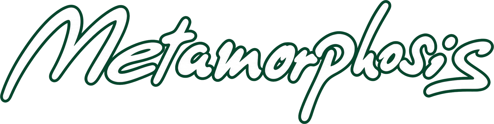
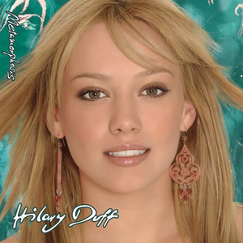
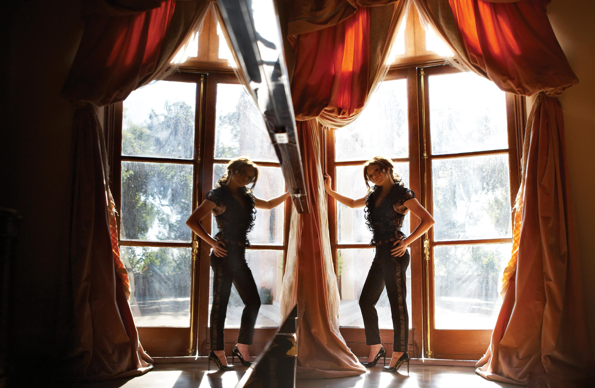
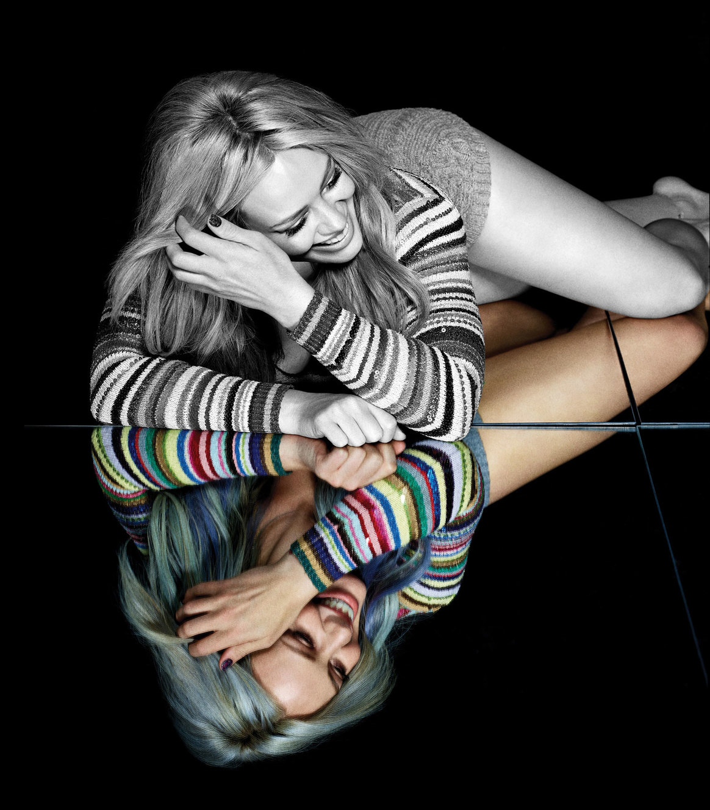
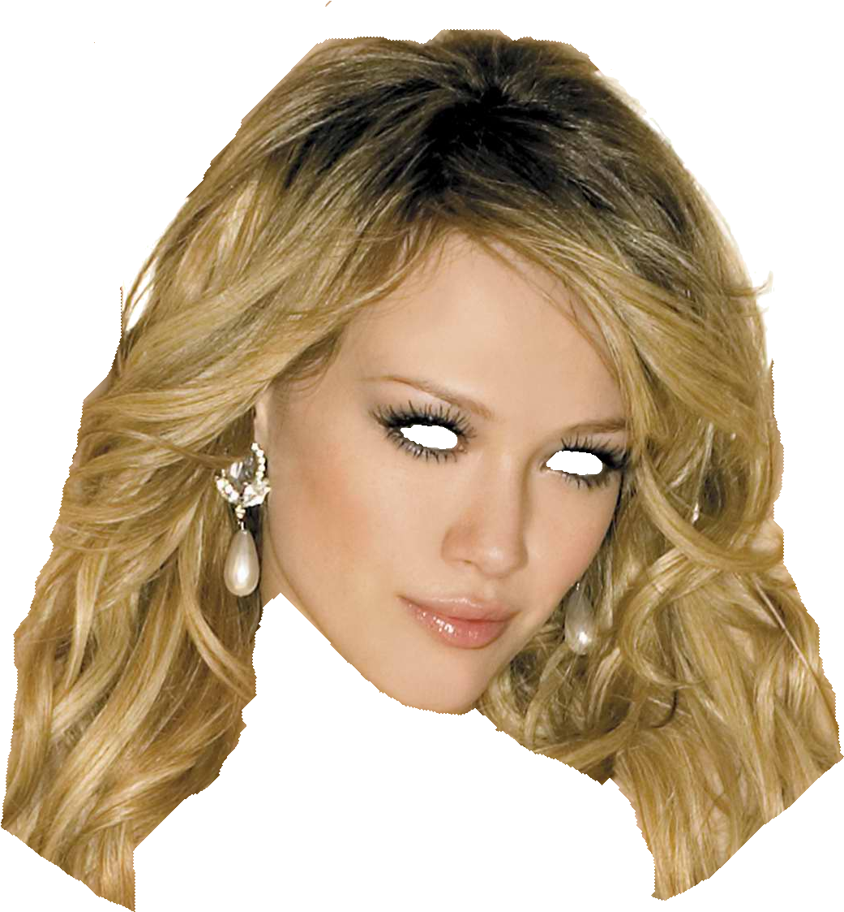
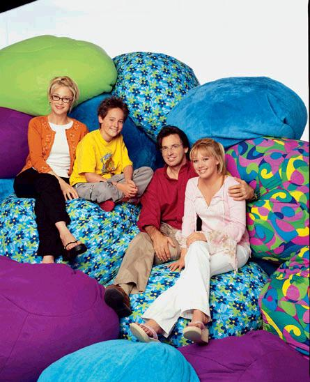

SPOTIFYluck… or something · 2026
FAN CLUB OFICIAL · MÉXICO · DESDE 2005
Hilary Duff
Hilary Duff
México
Noticias, música, películas, conciertos y proyectos para fans de Hilary en México.
AHORA
luck… or something
the lucky me tour · México · febrero 2027
MX · 2027
12 · 13 · 15 FEB
CDMX · GDL
…
NOVEDADES
Lo nuevo, bien puesto.
Noticias verificadas, entrevistas, anuncios y México. Sin llenar la página de cosas que no dicen nada.
the lucky me tour suma 32 fechas.
Europa, Latinoamérica y Estados Unidos entran a la siguiente vuelta del tour.
Leer anuncio oficial ↗ENTREVISTA · VOGUE MÉXICO
Volver al pop sin fingir que no pasó el tiempo.
Leer ↗LIZZIE · 25 AÑOS
Lizzie sigue encontrando gente nueva.
Disney+ ↗3
MÉXICO 2027
Dos noches en CDMX. Una en Guadalajara.
OCESA ↗
VIDEO
Weather For Tennis.
Ver video oficial ↗
ESCUCHAR / VER
Play.
El reproductor sólo carga cuando tú lo pides. Menos peso al abrir la página, misma música.
MÚSICA
Disco por disco.
Siete capítulos. Cada uno conserva su propia foto, su propio logo, su propia temperatura.


2002 · DEBUT NAVIDEÑO
Antes de que todo cambiara.
Hilary todavía estaba pegada a Lizzie y ya tenía un disco propio entre nieve artificial, guitarras pop y Haylie haciendo aparición. Es el principio musical en serio, aunque huela a diciembre.
- Edición original
- 9 canciones · 36 min aprox.
- Casa
- Walt Disney Records
- En repeat
- Santa Claus Lane · Same Old Christmas
Guiño · sí, hay un dueto con Haylie. La familia Duff ya estaba haciendo lore.
Escuchar en Spotify ↗

2003 · 13 CANCIONES · 43:14
El disco que hizo época.
El momento en que Hilary dejó de ser sólo “la chica de Lizzie” y empezó a sonar desde habitaciones, radios, MTV y reproductores de CD por todas partes. Pop limpio, un poco de guitarra y una lluvia que todavía no termina de caer.
- Salida
- 26 agosto 2003
- Casa
- Hollywood Records
- En repeat
- So Yesterday · Come Clean · Why Not
Guiño · Come Clean logró que una lluvia cualquiera todavía tenga posibilidades de volverse video musical.
Escuchar en Spotify ↗


2004 · 17 CANCIONES · 59 MIN
Más oscuro. Más ruido. Más Hilary.
Un año después, el rosa se apaga y las guitarras suben. No es una ruptura dramática: es una adolescente probándose otra silueta, otra voz y canciones menos pulidas por el molde Disney.
- Salida
- 15 septiembre 2004
- Casa
- Hollywood Records
- En repeat
- Fly · The Getaway · Someone’s Watching Over Me
Guiño · Fly llegó mucho antes de que internet decidiera llamar “main character energy” a todo.
Escuchar en Spotify ↗


2005 · 13 CANCIONES · 44:20
Greatest hits, pero con cosas nuevas.
Una recopilación que no quiso quedarse quieta. Wake Up, Beat of My Heart y Break My Heart terminaron dándole identidad propia a una etapa que debía mirar hacia atrás y acabó empujando hacia adelante.
- Tipo
- Recopilatorio
- Casa
- Hollywood Records
- En repeat
- Wake Up · Beat of My Heart
Guiño · Wake Up convirtió ciudades enteras en una lista de planes para el fin de semana.
Escuchar en Spotify ↗Dignity

2007 · 14 CANCIONES · 49:18
El club abrió de noche.
Electropop, perfumes, flashes y una Hilary que ya no necesitaba pedir permiso para crecer. Dignity suena más filoso y se ve más caro; por algo sigue teniendo una defensa casi religiosa entre fans.
- Salida
- marzo 2007
- Casa
- Hollywood Records
- En repeat
- With Love · Stranger · Play With Fire
Guiño · With Love. Stranger. Play With Fire. El caso se presenta solo.
Escuchar en Spotify ↗
2015 · 12 CANCIONES · 42:17
Respirar, volver, bailar.
Ocho años después de Dignity, Hilary vuelve con pop más limpio, brillante y adulto. Sparks abrió la puerta; el resto del disco encontró un punto raro entre ligereza, nostalgia y ganas de empezar otra vez.
- Salida
- 12 junio 2015
- Casa
- RCA Records
- En repeat
- Sparks · My Kind · Breathe In. Breathe Out.
Guiño · sí, recordamos el silbido. No hace falta fingir que no.
Escuchar en Spotify ↗luck…
or something
or something
2026 · 11 CANCIONES · 37:54
Once años después.
No intenta fingir que es 2003. Tampoco le da la espalda. Hilary vuelve al pop desde otro lugar: matrimonio, hijos, crecer, mirar atrás sin quedarse ahí y canciones que saben perfectamente quién está escuchando.
- Salida
- 20 febrero 2026
- Casa
- Sugarmouse / Atlantic
- En repeat
- Weather For Tennis · Roommates · Future Tripping
Guiño · muy Leo de su parte volver once años después y hacerlo parecer casual.
Escuchar en Spotify ↗
FILMS / SERIES
El otro jukebox.
Elige un personaje. A la izquierda navegas; a la derecha cambia la ficha. En móvil, la lista pasa arriba para no perderte.
DISNEY CHANNEL
Lizzie McGuire
Lizzie, Miranda, Gordo y ese alter ego animado que decía lo que ella no siempre podía.
Ver especial Lizzie ↓LM

2001 → 2026
Lizzie
Lizzie
25
65 episodios, una película, Roma, Gordo, Miranda y una caricatura de 2D que todavía puede explicar una emoción mejor que uno.
2001 · estreno
2003 · Roma
65 episodios
25 años
Disney+ ↗
THIS IS
WHAT DREAMS
ARE MADE OF
WHAT DREAMS
ARE MADE OF

GORDOMIRANDAROME
THE LUCKY ME TOUR
México 2027.
Elige tu fecha. Guardamos tu selección y aquí aterrizamos la información que sí te sirve para esa noche.
Palacio de los Deportes
Ciudad de México
HorariosAccesosMerchFan project
DESDE 2005
Internet cambió.
Internet cambió.
El fan club siguió.
HDM empezó cuando seguir a Hilary todavía significaba foros, revistas, discos físicos, fotos guardadas en carpetas y esperar que una noticia cruzara internet. Cambiaron las plataformas. No la parte importante: encontrar a otra persona que también quería saberlo todo.
Hoy compartimos noticias, organizamos actividades y preparamos proyectos para sus visitas a México. A veces es una listening party. A veces una bandera. A veces simplemente estar pendientes juntos.
FAN CLUB
Hazte miembro de HDM.
Regístrate para actividades, convocatorias, fan projects y lo que venga con Hilary en México.
Quiero unirme →EST. 2005